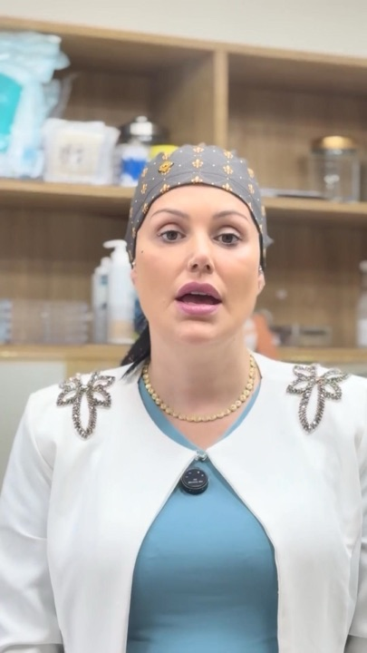
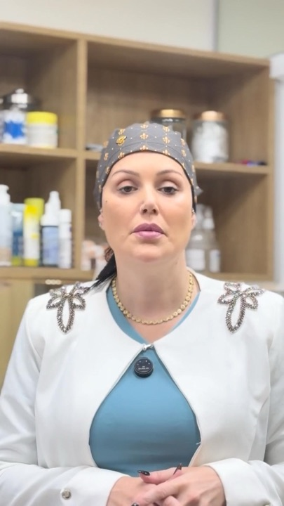
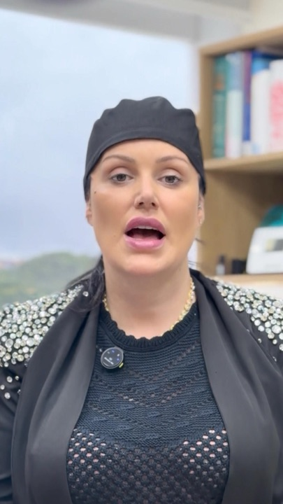
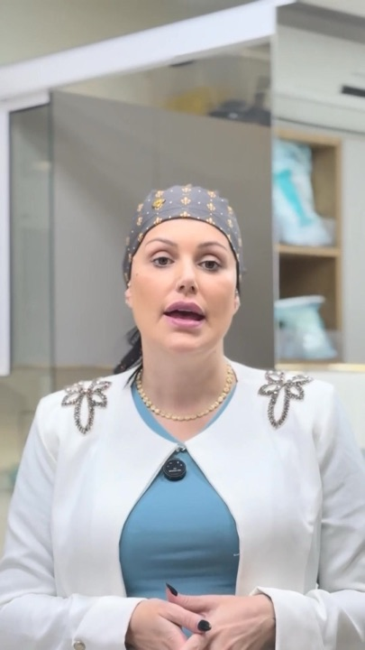
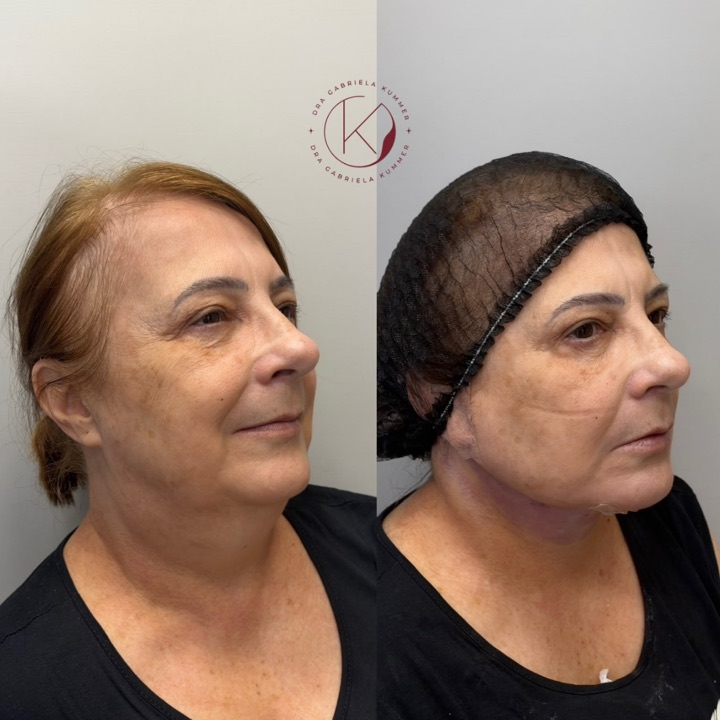
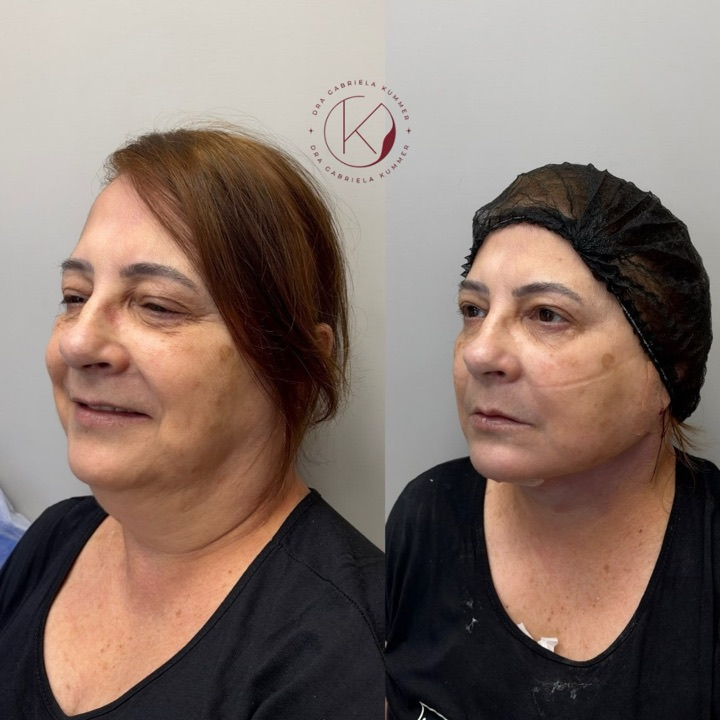
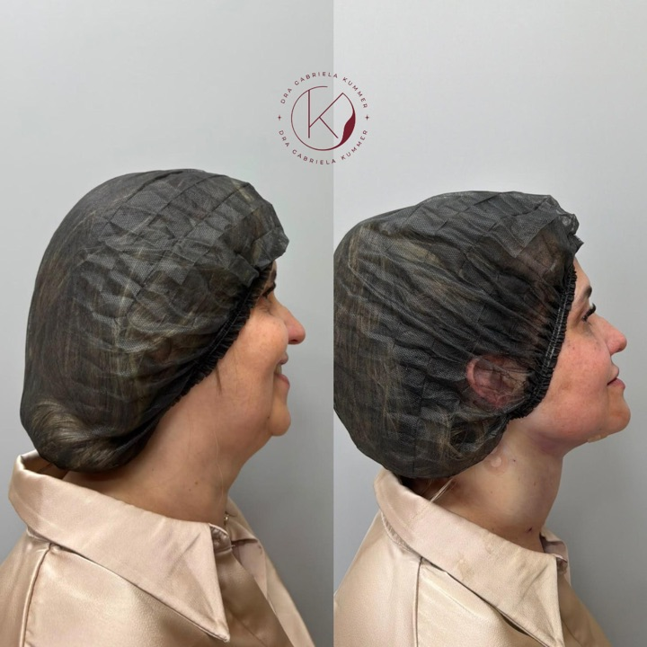

Dr. Giácomo Trojan · Lipo de papada · concorrentes
Todos os anúncios ativos das 2 doutoras que a Camila trouxe, tirados da Biblioteca de Anúncios da Meta em 19/11. Clique no nome para abrir a página de anúncios de cada uma e em cada imagem para abrir o anúncio.
Lemos 20 anúncios, entre os 20 que estas páginas mantêm ativos hoje. Três números resumem como esse mercado anuncia:
São a prova mais forte de que o formato funciona.
A Gabriela manda todo anúncio direto para o WhatsApp. A Monique manda para o perfil, mas o primeiro link que a pessoa vê lá é o WhatsApp.
Gabriela Kummer · Monique FrauzinoAntes e depois com touca (Gabriela) ou a própria paciente falando (Monique). Nenhuma das duas usa só arte ou texto.
Gabriela Kummer · Monique FrauzinoTempo de procedimento (menos de 1 hora, 45 minutos), recuperação (48 horas) e quantidade de pacientes. É a objeção do “vai doer, vou ficar parada quanto tempo?” respondida antes de perguntarem.
Gabriela Kummer · Monique FrauzinoA Monique tem anúncios no ar há 97 dias, e o vídeo do LAP5 da Gabriela está há 46 dias em 5 versões. Elas variam pouco e repetem o que funciona.
Gabriela Kummer · Monique Frauzino“Agende AGORA pelo link na bio” (Monique) e “Clique no botão e faça seu diagnóstico pelo WhatsApp” (Gabriela). A pessoa sempre sabe o que fazer.
Gabriela Kummer · Monique Frauzino01
Lipo de papada · Balneário Camboriú (SC) · CRO-SC 13314
Biblioteca de anúncios ↗ @dra.gabrielakummer ↗
“Emagreceu, mas ela continua ali” Você emagrece, cuida da alimentação, treina… e aquele volume abaixo do queixo continua ali? Isso acontece porque nem toda papada está…
Botão: WhatsApp ver anúncio ↗
Cada paciente que chega aqui traz uma insegurança diferente. Mas quase todas dizem a mesma frase: “Eu só queria voltar a gostar das minhas fotos.” 💛 O Método LAP5,…
Botão: WhatsApp ver anúncio ↗

Cada paciente que chega aqui traz uma insegurança diferente. Mas quase todas dizem a mesma frase: “Eu só queria voltar a gostar das minhas fotos.” 💛 O Método LAP5,…
Botão: WhatsApp ver anúncio ↗

Cada paciente que chega aqui traz uma insegurança diferente. Mas quase todas dizem a mesma frase: “Eu só queria voltar a gostar das minhas fotos.” 💛 O Método LAP5,…
Botão: WhatsApp ver anúncio ↗

Cada paciente que chega aqui traz uma insegurança diferente. Mas quase todas dizem a mesma frase: “Eu só queria voltar a gostar das minhas fotos.” 💛 O Método LAP5,…
Botão: WhatsApp ver anúncio ↗

Cada paciente que chega aqui traz uma insegurança diferente. Mas quase todas dizem a mesma frase: “Eu só queria voltar a gostar das minhas fotos.” 💛 O Método LAP5,…
Botão: WhatsApp ver anúncio ↗

Nem toda papada é gordura. E é por isso que nem toda papada se resolve com lipoaspiração. Você sabia que o volume abaixo do queixo também pode estar relacionado a…
Botão: WhatsApp ver anúncio ↗

Nem toda papada é gordura. E é por isso que nem toda papada se resolve com lipoaspiração. Você sabia que o volume abaixo do queixo também pode estar relacionado a…
Botão: WhatsApp ver anúncio ↗

Nem toda papada é gordura. E é por isso que nem toda papada se resolve com lipoaspiração. Você sabia que o volume abaixo do queixo também pode estar relacionado a…
Botão: WhatsApp ver anúncio ↗
02
Lipo de papada · Curitiba (PR) · premiada “Melhor Lipo de Papada do PR”
Biblioteca de anúncios ↗ @dra.monique_frauzino ↗
A cirurgia não muda apenas a sua estética… ela muda a forma como você se vê, se sente e se permite viver. 💚 Para algumas pessoas, é a liberdade de tirar fotos sem…
Botão: Perfil do Instagram ver anúncio ↗
Em apenas 45 MINUTOS, ela teve a vida transformada! 👀 Agende AGORA pelo link na bio. Caso realizado: ✨ Cirurgiã dentista - Monique Thais Silva Costa 📌 CROPR 30377 -…
Botão: Perfil do Instagram ver anúncio ↗
Quase 2 meses após a cirurgia, receber a Eloisa de volta e vê-la tão feliz, confiante e radiante é uma alegria que não tem preço. Hoje ela compartilha como essa…
Botão: Perfil do Instagram ver anúncio ↗
Ouvir o depoimento da Thaís sobre seu pós-operatório é daquelas coisas que fazem tudo valer a pena. 💚 Pacientes como ela são verdadeiras bênçãos em nossa vida. Ver sua…
Botão: WhatsApp ver anúncio ↗
O vídeo da Geni que a Camila mandou segue o mesmo formato que funciona para as duas: frustração, caso real, a frase da paciente e o convite. A versão de 47s vai para aprovação junto com esta página.
É o que sustenta a Monique há 3 meses. Uma paciente 30 a 60 dias depois, contando como se sente. Uma frase forte no começo, como “eu entrei aqui uma pessoa e saí outra”.
O Dr. respondendo em 20 segundos com os números dele: tempo de procedimento, anestesia e retorno. É a lista que a Gabriela usa, mas dita por ele e sem promessa.